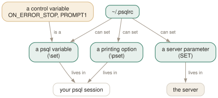

Day 06
Your own psqlrc
One startup file, three different things called “set”, and the typo nobody catches.
By the end of today you can
- put yesterday's settings in a file that loads every time, without the start-up chatter
- tell \set, \pset and SET apart, and say which of the three the server ever hears about
- explain why a mistyped control-variable name is accepted without complaint
Everything from yesterday, permanently
Unless you pass -X, psql reads two files at start-up: a system-wide psqlrc and then your ~/.psqlrc. They are ordinary psql input — anything you can type at the prompt, you can put in them — and the important detail is when they run: after connecting, but before you get a prompt. So they can configure the client and the session on the server.
The system-wide file lives in the installation's configuration directory, which pg_config --sysconfdir will tell you (/etc on a Fedora package build) and PGSYSCONFDIR will override. Most machines have no such file, and it is worth confirming that rather than assuming it: it is the natural place for someone to have set AUTOCOMMIT off for the whole box.
Your own file is ~/.psqlrc, relocatable with PSQLRC. Both files may carry a version suffix, and the most specific one wins outright rather than adding to the others:
~/.psqlrc-18.6 most specific — if this exists, the two below are ignored
~/.psqlrc-18 checked next
~/.psqlrc the plain one, used only if neither of the above is present

SET crosses the connection. The amber aspect is the day's trap: a control variable is an ordinary psql variable that psql happens to recognise by name, so misspelling the name creates a harmless variable nobody reads, while misspelling the value of a real one is caught immediately.Three commands called set, and only one crosses the wire
The names are unfortunate and the distinction is absolute.
\set- psql's own variables. Name/value pairs, values are strings, and about thirty specific names change psql's behaviour. Never leaves the client.
\pset- yesterday's twenty-two printing options. Also purely client-side, and a separate namespace — there is no psql variable called
nulland no printing option calledQUIET. SET- SQL. Sets a server parameter for this session:
search_path,statement_timeout,timezone,work_mem. The only one the server ever hears about.
All three belong in psqlrc, and the third is the one people forget is available. A SET search_path TO app, public in your startup file is how you stop typing schema prefixes in a database you work in daily — and \dconfig from Day 4 will show you the result.
Reading a variable back is \echo :NAME, and bare \set lists everything currently set. Day 12 does interpolation properly; today \echo :DBNAME is enough to prove a file loaded.
Control variables, and the typo nobody catches
By convention psql's own variables are in capitals, and you should stay out of that namespace. But the convention is all there is: a control variable is just a variable whose name psql recognises. Set a name it does not recognise and you have made yourself an ordinary variable, with no warning:
testdb=# \set ON_ERROR_STOPP on
testdb=# \echo :ON_ERROR_STOPP
on
testdb=# \set ON_ERROR_STOP maybe
unrecognized value "maybe" for "ON_ERROR_STOP": Boolean expected
testdb=# \echo :ON_ERROR_STOP
off
Names are unchecked; values are checked. That is worth knowing because a psqlrc is exactly where such a typo goes unnoticed for months — the file loads without complaint and the setting you thought you had is simply absent.
Three further rules make control variables behave unlike ordinary ones:
- They cannot be unset.
\unset VERBOSITYis accepted, and means “back to the default”, not “gone”. \setwith no value meansonfor the boolean ones, so\set ON_ERROR_STOPis the idiomatic spelling. For an enumerated one it is an error, and psql lists the valid values for you.- Booleans accept the usual spellings —
on,off,true,false,1,0,yes,no— and any unambiguous prefix of them.
Loading without the chatter
A psqlrc that sets four things greets you with four confirmations every time you start psql. That is how people learn to ignore psql's messages, which is a bad habit to acquire on purpose. The fix is a pair of bookends:
\set QUIET on -- first line of the file
\pset null '(null)'
\pset expanded auto
\timing on
\unset QUIET -- last line, so YOUR commands still confirm themselves
Without the pair, start-up prints “Null display is "(null)".”, “Expanded display is used automatically.” and “Timing is on.” before your prompt. With it, silence — and because QUIET goes back off at the foot of the file, anything you type yourself still reports back.
To test a change without restarting, \i ~/.psqlrc re-reads the file in place — tilde expansion included. That is also the answer to “how do I reload it”, since there is no \reload.
Today's habit
Create the file. Four lines from the box above this section, and from tomorrow onwards every day of this course adds one or two more with a comment saying why. The whole assembled file is linked at the top of the syllabus, but copying it wholesale would defeat the point — the value is that you can defend each line.
Tomorrow: making the editing itself less painful, which is mostly readline plus one environment variable.
New vocabulary
Commands
| Command | Does |
|---|---|
\set | With no argument, list every variable currently set, with its value. |
\set NAME value | Set a psql variable. Several values are concatenated. |
\unset NAME | Delete it — or, for a control variable, restore its default. |
\echo :NAME | Read a variable back. The cheapest debugging tool psql has. |
\i ~/.psqlrc | Re-read the startup file without restarting. Tilde expansion works. |
Options
| Option | Does |
|---|---|
-X | Skip both startup files. Every script should pass this. |
PSQLRC | Where the personal startup file lives. Overrides ~/.psqlrc. |
PGSYSCONFDIR | Where the system-wide psqlrc is looked for. |
QUIET | Suppress psql's informational chatter. The startup file's bookends. |
VERSION_NAME SERVER_VERSION_NUM | psql's version and the server's, as a string and a number. |
Today's configappend to ~/.psqlrc
Load quietly. Without this, every \set and \pset below announces itself every time you start psql, and you learn to ignore psql's messages — which is exactly the habit you do not want. The matching \unset QUIET is the last line of this file, so anything you type yourself still reports back.
\set QUIET on
Never confuse a NULL with an empty string again. psql prints nothing for NULL by default, which in a padded column is indistinguishable from ''.
\pset null '(null)'
Go vertical only when a row is genuinely too wide, rather than never or always. Narrow results stay as tables; twelve-column rows stop wrapping into soup.
\pset expanded auto
Box-drawing borders. Pure cosmetics, and worth it the first time somebody asks you to share your screen. Drop these two lines if you work over a terminal that mangles Unicode.
\pset linestyle unicode
\pset border 2
psql reads this once at start-up, after connecting. Re-read it in place with \i ~/.psqlrc.
Drillsdo these in a real terminal, today
Self-check
Answer out loud first, then unfold.
You put \set ON_ERROR_STOPP on in your psqlrc — one letter wrong. Why does psql not complain, when it happily rejects \set ON_ERROR_STOP maybe?
Because a control variable is just a psql variable whose name psql recognises. ON_ERROR_STOPP is not a name it knows, so it becomes an ordinary user variable holding the string “on”, which is a perfectly legal thing to do. Nothing is wrong from psql's point of view; you simply created a variable nobody reads.
Whereas ON_ERROR_STOP is recognised, so its value is validated — “unrecognized value "maybe" for "ON_ERROR_STOP": Boolean expected”, and the variable is left at its previous setting. Names are unchecked, values are checked. \echo :ON_ERROR_STOP after any change is the two-second confirmation.
\set, \pset and SET. Which of the three does the server ever find out about?
Only SET, which is SQL and sets a server parameter for the session — search_path, statement_timeout, timezone. The other two never leave psql: \set manages psql's own variables, and \pset manages the twenty-two printing options from yesterday.
The manual page's note under \set — “this command is unrelated to the SQL command SET” — is doing a lot of work for one sentence. All three are legal in psqlrc, because the startup file is read after connecting, so it can configure the client and the session on the server in the same breath.
Two developers share a machine. One has ~/.psqlrc and ~/.psqlrc-18, and swears the first one is being ignored. Are they right?
Yes, entirely. Both the system-wide and the personal startup file can be version-suffixed — ~/.psqlrc-18 or ~/.psqlrc-18.6 — and the most specific match wins outright. It is not additive: if ~/.psqlrc-18 exists, ~/.psqlrc is not read at all.
It is a genuinely useful feature for anyone who keeps several major versions of the client around, and a reliable source of confusion for everyone else. If you do use it, have the specific file \i the general one on its first line.
Why does a script that works on your machine fail on a colleague's with an error about a variable they have never heard of?
Because psql read one of their startup files first. Since PostgreSQL 9.6 -c no longer implies -X, so even a one-shot psql -c '...' picks up ~/.psqlrc — along with whatever \pset format, AUTOCOMMIT or search_path it sets.
The fix is one flag: every psql invocation inside a script gets -X. A script's behaviour should not depend on whose account it runs under, and this is the commonest way that it does.
Cheat sheet
Startup files, most specific first. A match wins outright; it does not add to the others.
~/.psqlrc-18.6 > ~/.psqlrc-18 > ~/.psqlrc PSQLRC= relocates it
system-wide: $(pg_config --sysconfdir)/psqlrc PGSYSCONFDIR= relocates it
-X skip both. ALWAYS pass it in scripts: since 9.6, -c no longer implies -X
read AFTER connecting, so \set, \pset AND SET are all legal in it
\set QUIET on ... \unset QUIET -- bookends: load silently, then report normally
\i ~/.psqlrc -- re-read it without restarting
-- \set = psql's own variables (client) \echo :NAME to read one, \set to list all
-- \pset = printing options (client)
-- SET = server parameters (server) <- the only one that crosses the wire
-- control variables: NAME unchecked, VALUE checked. \unset = back to default.
Everything through Day 06
Keys
| Key | Does |
|---|---|
| C-c | Abandon the line you are typing and empty the query buffer. |
| C-d | End the session — but only when the buffer is empty. |
Commands
| Command | Does |
|---|---|
psql | Connect with the defaults and start an interactive session. |
; | Dispatch the buffer. Not a meta-command — SQL's own statement terminator. |
\g | Dispatch the buffer, exactly as a semicolon does. |
\p | Print the buffer without sending it. \print in full. |
\r | Reset: throw the buffer away. \reset in full. |
\e | Edit the buffer in $EDITOR; on exit it is re-parsed and run. |
\w file | Write the buffer to a file instead of sending it. |
\; | Append a semicolon to the buffer without dispatching it. |
\? | Every meta-command, in twelve groups. 121 of them in 18.6. |
\h SELECT | Syntax for one SQL command. \h alone lists what it knows. |
\q | Quit. |
\c dbname | Reconnect to another database, reusing host, port and user. |
\c - user | Reconnect as another user. A dash means “leave that one as it is”. |
\c -reuse-previous=on ... | Merge a conninfo string onto the current parameters. |
\conninfo | A twelve-row table describing the live connection. |
\password | Change a password without it reaching your history or the server log. |
\encoding | Show the client encoding, or set it. |
\d | Bare: tables, views, materialized views, sequences and foreign tables. |
\d my_table | Describe one relation: columns, types, nullability, defaults, indexes, constraints. |
\d+ my_table | Adds storage, compression, stats target and per-column comments. |
\dt | Tables. The letters combine — \dti lists tables and indexes. |
\di \dv \dm \ds \dE | Indexes, views, materialized views, sequences, foreign tables. |
\dn | Schemas. \dn+ adds permissions and comments. |
\l | Databases, with owner, encoding, locale provider and privileges. |
\dP | Partitioned tables and indexes; add n to include non-root ones. |
\dx | Installed extensions; \dx+ lists everything each one owns. |
\df pattern | Functions, with result type, argument types and kind. |
\df pattern t1 t2 | Extra arguments are type patterns, matched positionally. |
\sf name | The function's source as CREATE OR REPLACE. \sf+ numbers the body. |
\sv name | The same for a view. \ev and \ef edit rather than show. |
\du | Roles and their attributes. \dg is the same command. |
\drg | Role grants: who is a member of what, with ADMIN/INHERIT/SET. |
\dp | Access privileges on tables, views and sequences. \z is the same command. |
\ddp | Default privileges — what future objects will be created with. |
\dconfig | Server parameters set to non-default values. \dconfig * for all of them. |
\drds | Settings attached to a role, a database, or the pair. |
\dT \do \da | Types, operators and aggregates — same grammar, rarer questions. |
\pset | With no argument, print all 22 printing options and their current values. |
\x | Toggle expanded mode. \x auto is the setting worth keeping. |
\a \t \f \C \H | Shortcuts kept for compatibility: format, tuples_only, fieldsep, title, HTML. |
\set | With no argument, list every variable currently set, with its value. |
\set NAME value | Set a psql variable. Several values are concatenated. |
\unset NAME | Delete it — or, for a control variable, restore its default. |
\echo :NAME | Read a variable back. The cheapest debugging tool psql has. |
\i ~/.psqlrc | Re-read the startup file without restarting. Tilde expansion works. |
Options
| Option | Does |
|---|---|
-h -p -U -d | Host, port, user, database. -d also takes a whole conninfo string. |
-w -W | Never prompt for a password / always prompt. Both persist across \c. |
-l | List databases and exit. Connects to postgres unless told otherwise. |
PGHOST PGPORT PGUSER PGDATABASE | libpq's defaults for the four parameters. |
PGPASSFILE | The password file. Default ~/.pgpass, and it must be mode 0600. |
PGSERVICEFILE | Named connection recipes. Default ~/.pg_service.conf. |
S | Include system objects: \dtS. Supplying any pattern does this too. |
+ | More columns — and a size lookup per relation, so it is not free. |
x | Expanded output for this listing only. Goes after S or +, never straight after \d. |
a n p t w | Function-kind filters for \df: aggregate, normal, procedure, trigger, window. |
format | aligned (default), wrapped, unaligned, csv, html, asciidoc, latex, troff-ms. |
expanded | on / off (default) / auto — vertical records, always or only when too wide. |
null | What to print for NULL. Default is nothing, which reads exactly like an empty string. |
border | 0 none, 1 dividing lines (default), 2 a full frame. |
linestyle | ascii (default) or unicode. Aligned and wrapped only. |
footer | The (n rows) line. off removes it. |
columns | Target width for wrapped, and the threshold for expanded auto. 0 means use $COLUMNS. |
pager | off / on (default, meaning “only when it does not fit”) / always. |
xheader_width | full (default) / column / page / an integer — how long the record rule may be. |
-X | Skip both startup files. Every script should pass this. |
PSQLRC | Where the personal startup file lives. Overrides ~/.psqlrc. |
PGSYSCONFDIR | Where the system-wide psqlrc is looked for. |
QUIET | Suppress psql's informational chatter. The startup file's bookends. |
VERSION_NAME SERVER_VERSION_NUM | psql's version and the server's, as a string and a number. |